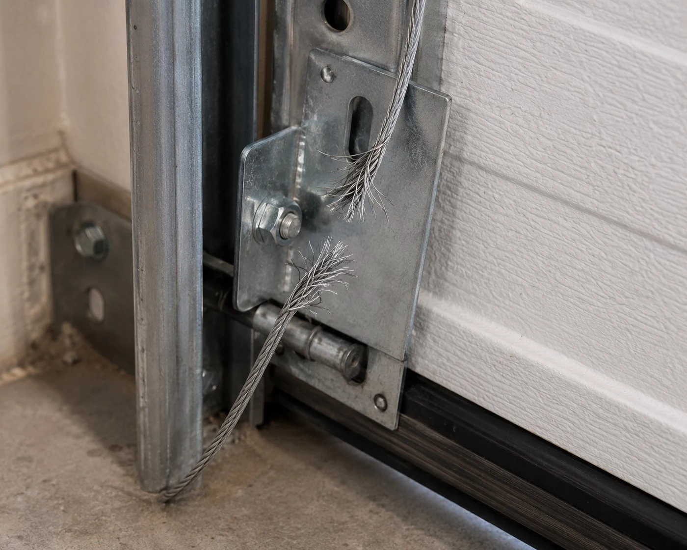

What garage door cables do and why they fail
Garage door lift cables run from the bottom corner brackets of the door up to the cable drums mounted on the torsion spring shaft. As the spring winds and unwinds, the drums reel the cables in and out — lifting and lowering the door evenly on both sides. When a cable snaps, one side of the door loses support and the door drops or hangs at an angle.
Cables fail for a few reasons. The most common in Columbus homes is that the cable breaks simultaneously with or shortly after a spring failure — when the spring snaps, the sudden load transfer overstresses the cable. Cables also fail from corrosion and wear over time, especially at the bottom bracket fitting where the cable terminates.

What to do when a cable snaps
Don't try to run the door with the opener if a cable has snapped. The door is unbalanced and forcing it can bend the track, damage the opener, or cause the door to come down suddenly. Leave the door in whatever position it's in and call us.
If the door is stuck partially open, don't try to manually pull it down either. The full weight of the door is no longer counterbalanced, and a door without spring tension is extremely heavy and dangerous to handle without the right tools.
"A homeowner in Reynoldsburg called us after his cable snapped while the door was closing — it dropped on one side and he heard the track bend. When we got there, the cable was gone but the track had also taken a hit. We replaced the cable pair, straightened the track section, and replaced a bent roller that had been knocked out of alignment. The whole thing took about an hour and fifteen minutes. Running the opener on a door with a snapped cable is what turned a $150 cable repair into a $280 repair."
Why we replace cables in pairs
If one cable has snapped, the other has been through the same number of cycles and is subject to the same wear. Replacing only the broken one is a short-term fix — the second cable often fails within weeks or months. We replace both at once as standard practice, and we explain why before we start. You can choose otherwise, but we'll tell you what we'd recommend.
Cable repair questions
How do I know my cable is broken?
The door drops or hangs at an angle, one side low, one side stuck. The cable may be visible lying loose at the bottom of the door frame or coiled on the floor.
How much does cable repair cost?
Cable repair in Columbus runs $100–$200 for both cables including labor. If the spring also needs replacement, that's quoted separately. Written quote before work starts.
How long does cable repair take?
A standard cable replacement on a residential door takes 45–60 minutes. We check the full system — springs, drums, rollers — before leaving.
Is this an emergency repair?
A door that won't close due to a snapped cable is a security issue. We treat it as one. Emergency calls are answered nights and weekends at no extra charge.